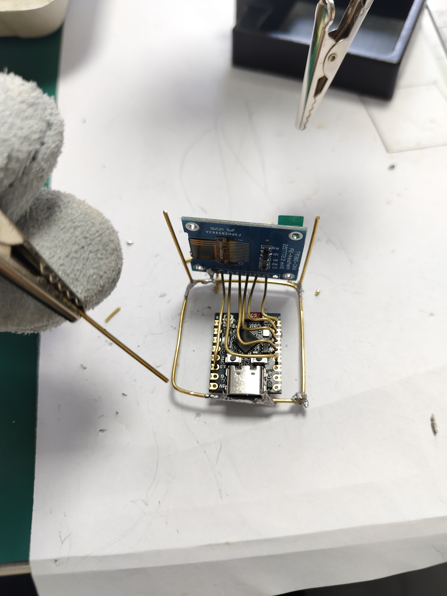
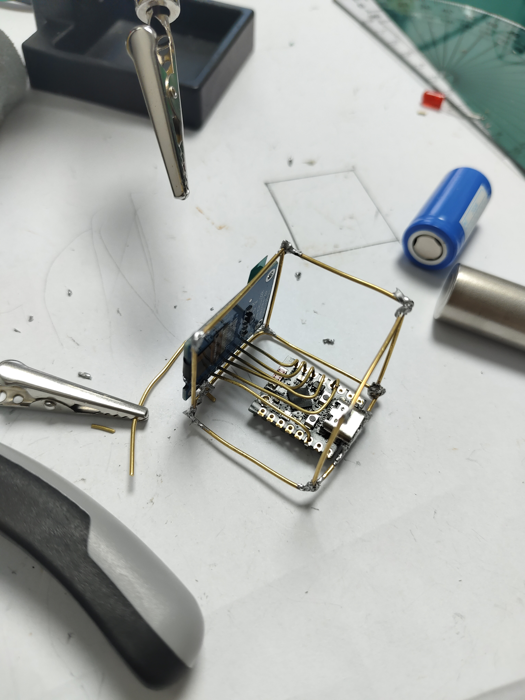
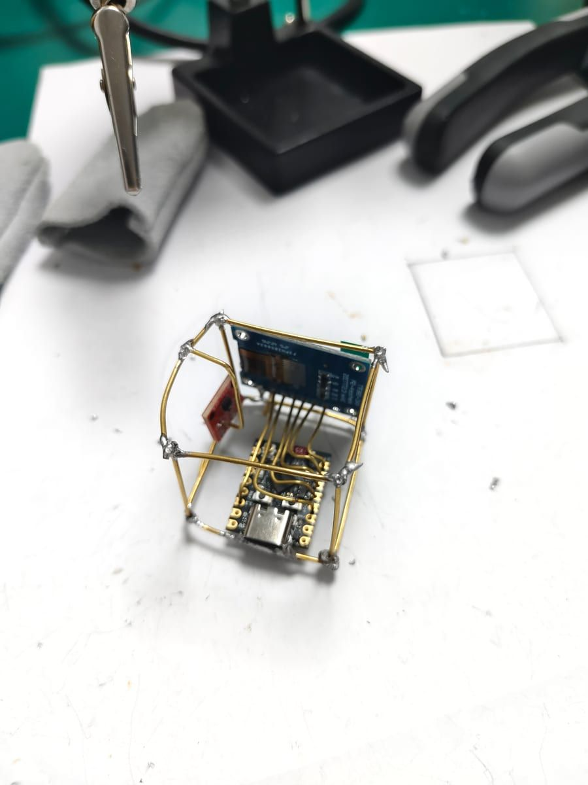
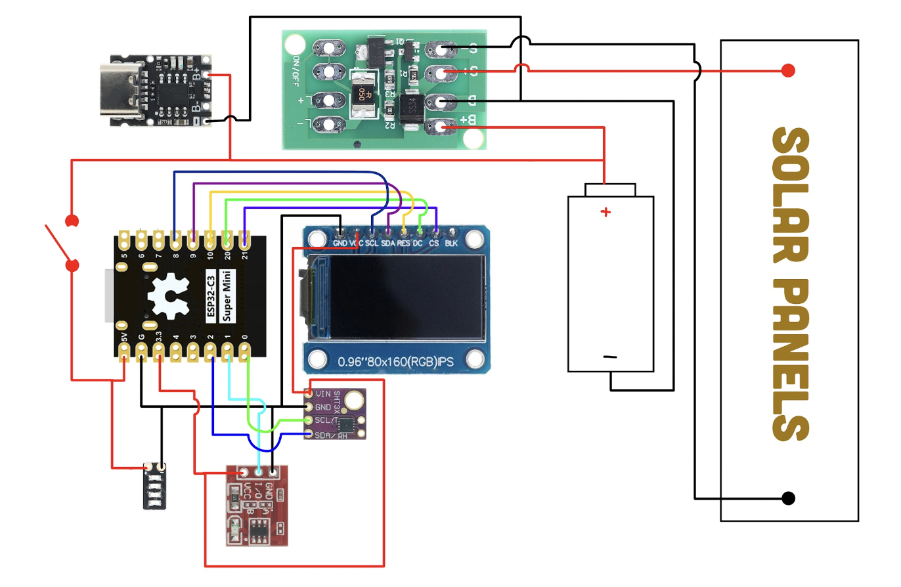
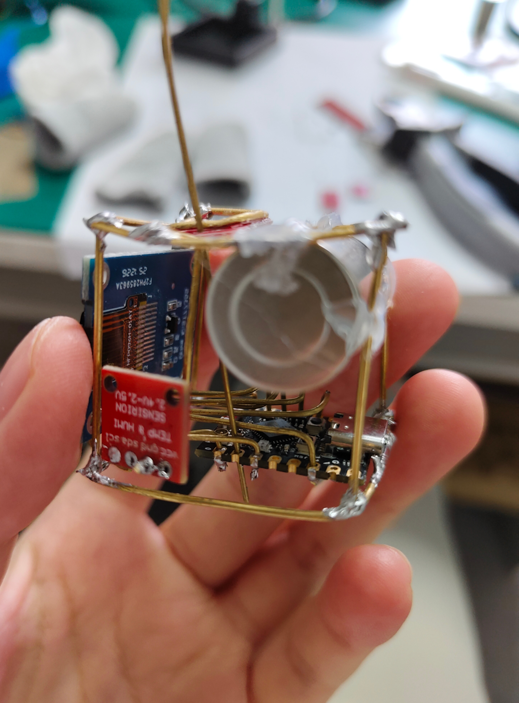

Solar powered
A compact photovoltaic panel harvests indoor light and keeps the satellite running free of cables.
A hand-built miniature satellite for your desk
Powered by the sun. Assembled by hand — one solder joint at a time. It quietly watches the room and tells you the temperature & humidity.
Desktop Satellite is a small hand-built model that behaves like the real thing — it captures light with a solar panel, converts it into power, and runs on its own with no cable attached. Every board, wire and solder joint was put together by hand.
On its onboard screen it shows the current temperature and humidity of the room, so the tiny satellite doubles as a living weather station that sits quietly beside your monitor.
A compact photovoltaic panel harvests indoor light and keeps the satellite running free of cables.
An onboard sensor reads the ambient temperature and updates the display in real time.
Relative humidity is measured continuously, so you always know how dry or comfy the room feels.
Built piece by piece — every connection made by hand with a soldering iron, no ready-made kit.
A small OLED / LCD screen shows both readings at a glance, even in low light.
With stored sunlight it keeps running through the evening, a true "desk satellite" that never sleeps.
The solar panel turns room light into electricity.
A small & stable circuit stores and conditions the energy.
The temperature & humidity sensor feeds the microcontroller.
The display lights up with live readings for you to read.
Core building blocks: ×1 solar panel · ×1 microcontroller · ×1 temp/humidity sensor (e.g. DHT11 / DHT22) · ×1 OLED/LCD display · wiring & solder. All joined by hand.





A maker who loves turning raw components into something meaningful. Desktop Satellite started as a soldering practice project and grew into a tiny solar-powered companion that quietly watches the room.